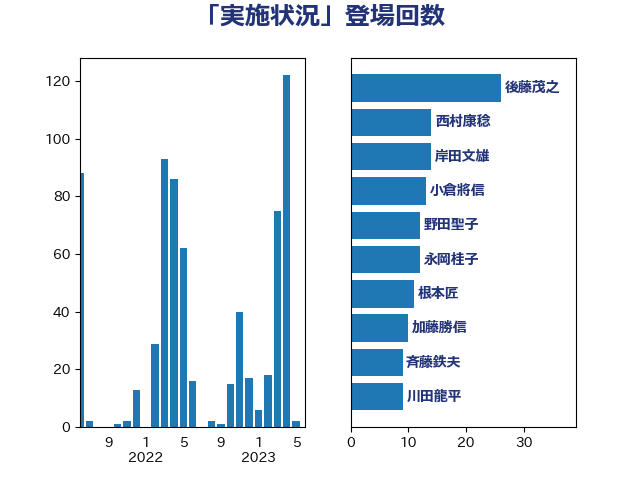

単語「実施状況」

| 後藤茂之 | 自由民主党 | 26 回 |
| 西村康稔 | 自由民主党 | 14 回 |
| 岸田文雄 | 自由民主党 | 14 回 |
| 小倉將信 | 自由民主党 | 13 回 |
| 野田聖子 | 自由民主党 | 12 回 |
| 永岡桂子 | 自由民主党 | 12 回 |
| 根本匠 | 自由民主党 | 11 回 |
| 加藤勝信 | 自由民主党 | 10 回 |
| 斉藤鉄夫 | 公明党 | 9 回 |
| 川田龍平 | 立憲民主党 | 9 回 |
| 松本剛明 | 自由民主党 | 8 回 |
| 武田良太 | 自由民主党 | 7 回 |
| 末松信介 | 自由民主党 | 7 回 |
| 安江伸夫 | 公明党 | 7 回 |
| 塩川鉄也 | 日本共産党 | 7 回 |
| 田村憲久 | 自由民主党 | 5 回 |
| 柴田巧 | 日本維新の会 | 5 回 |
| 岡田直樹 | 自由民主党 | 5 回 |
| 山口俊一 | 自由民主党 | 5 回 |
| 今井絵理子 | 自由民主党 | 5 回 |
| 青山大人 | 立憲民主党 | 4 回 |
| 金子恭之 | 自由民主党 | 4 回 |
| 赤池誠章 | 自由民主党 | 4 回 |
| 萩生田光一 | 自由民主党 | 4 回 |
| 竹内真二 | 公明党 | 4 回 |
| 小沢雅仁 | 立憲民主党 | 4 回 |
| 鈴木俊一 | 自由民主党 | 3 回 |
| 西岡秀子 | 国民民主党 | 3 回 |
| 田村まみ | 国民民主党 | 3 回 |
| 林芳正 | 自由民主党 | 3 回 |
| 小沼巧 | 立憲民主党 | 3 回 |
| 小林茂樹 | 自由民主党 | 3 回 |
| 宮本岳志 | 日本共産党 | 3 回 |
| 塩村あやか | 立憲民主党 | 3 回 |
| 城井崇 | 立憲民主党 | 3 回 |
| 和田義明 | 自由民主党 | 3 回 |
| 古川禎久 | 自由民主党 | 3 回 |
| 井上哲士 | 日本共産党 | 3 回 |
| 中島克仁 | 立憲民主党 | 3 回 |
| 高橋光男 | 公明党 | 2 回 |
| 須藤元気 | 無所属 | 2 回 |
| 音喜多駿 | 日本維新の会 | 2 回 |
| 紙智子 | 日本共産党 | 2 回 |
| 福島みずほ | 社会民主党 | 2 回 |
| 石川博崇 | 公明党 | 2 回 |
| 石垣のりこ | 立憲民主党 | 2 回 |
| 石井苗子 | 日本維新の会 | 2 回 |
| 田畑裕明 | 自由民主党 | 2 回 |
| 田村智子 | 日本共産党 | 2 回 |
| 牧山ひろえ | 立憲民主党 | 2 回 |
| 池畑浩太朗 | 日本維新の会 | 2 回 |
| 早稲田ゆき | 立憲民主党 | 2 回 |
| 岸真紀子 | 立憲民主党 | 2 回 |
| 岡本あき子 | 立憲民主党 | 2 回 |
| 小西洋之 | 立憲民主党 | 2 回 |
| 守島正 | 日本維新の会 | 2 回 |
| 大西健介 | 立憲民主党 | 2 回 |
| 大塚耕平 | 国民民主党 | 2 回 |
| 大口善徳 | 公明党 | 2 回 |
| 吉良よし子 | 日本共産党 | 2 回 |
| 吉田久美子 | 公明党 | 2 回 |
| 勝部賢志 | 立憲民主党 | 2 回 |
| 伊藤孝恵 | 国民民主党 | 2 回 |
| 中野洋昌 | 公明党 | 2 回 |
| 上田清司 | 国民民主党 | 2 回 |
| おおつき紅葉 | 立憲民主党 | 2 回 |
| 鳩山二郎 | 自由民主党 | 1 回 |
| 高見康裕 | 自由民主党 | 1 回 |
| 高良鉄美 | 無所属 | 1 回 |
| 高村正大 | 自由民主党 | 1 回 |
| 高木毅 | 自由民主党 | 1 回 |
| 高市早苗 | 自由民主党 | 1 回 |
| 青木愛 | 立憲民主党 | 1 回 |
| 阿部司 | 日本維新の会 | 1 回 |
| 長谷川淳二 | 自由民主党 | 1 回 |
| 金田勝年 | 自由民主党 | 1 回 |
| 金子道仁 | 日本維新の会 | 1 回 |
| 野間健 | 立憲民主党 | 1 回 |
| 野村哲郎 | 自由民主党 | 1 回 |
| 野中厚 | 自由民主党 | 1 回 |
| 進藤金日子 | 自由民主党 | 1 回 |
| 輿水恵一 | 公明党 | 1 回 |
| 足立康史 | 日本維新の会 | 1 回 |
| 赤木正幸 | 日本維新の会 | 1 回 |
| 谷公一 | 自由民主党 | 1 回 |
| 西銘恒三郎 | 自由民主党 | 1 回 |
| 西田昭二 | 自由民主党 | 1 回 |
| 西田実仁 | 公明党 | 1 回 |
| 西村明宏 | 自由民主党 | 1 回 |
| 芳賀道也 | 国民民主党 | 1 回 |
| 自見はなこ | 自由民主党 | 1 回 |
| 緑川貴士 | 立憲民主党 | 1 回 |
| 簗和生 | 自由民主党 | 1 回 |
| 福田昭夫 | 立憲民主党 | 1 回 |
| 神津たけし | 立憲民主党 | 1 回 |
| 磯崎仁彦 | 自由民主党 | 1 回 |
| 石田昌宏 | 自由民主党 | 1 回 |
| 石橋林太郎 | 自由民主党 | 1 回 |
| 石川昭政 | 自由民主党 | 1 回 |
| 田名部匡代 | 立憲民主党 | 1 回 |
| 熊谷裕人 | 立憲民主党 | 1 回 |
| 湯原俊二 | 立憲民主党 | 1 回 |
| 池田佳隆 | 自由民主党 | 1 回 |
| 池下卓 | 日本維新の会 | 1 回 |
| 櫻井周 | 立憲民主党 | 1 回 |
| 横山信一 | 公明党 | 1 回 |
| 森田俊和 | 立憲民主党 | 1 回 |
| 森本真治 | 立憲民主党 | 1 回 |
| 森山浩行 | 立憲民主党 | 1 回 |
| 柘植芳文 | 自由民主党 | 1 回 |
| 本田顕子 | 自由民主党 | 1 回 |
| 木村英子 | れいわ新選組 | 1 回 |
| 日下正喜 | 公明党 | 1 回 |
| 掘井健智 | 日本維新の会 | 1 回 |
| 打越さく良 | 立憲民主党 | 1 回 |
| 徳永エリ | 立憲民主党 | 1 回 |
| 広瀬めぐみ | 自由民主党 | 1 回 |
| 平沼正二郎 | 自由民主党 | 1 回 |
| 岬麻紀 | 日本維新の会 | 1 回 |
| 岩谷良平 | 日本維新の会 | 1 回 |
| 岩田和親 | 自由民主党 | 1 回 |
| 岩本剛人 | 自由民主党 | 1 回 |
| 岡本三成 | 公明党 | 1 回 |
| 山谷えり子 | 自由民主党 | 1 回 |
| 山田勝彦 | 立憲民主党 | 1 回 |
| 山添拓 | 日本共産党 | 1 回 |
| 山東昭子 | 自由民主党 | 1 回 |
| 山本博司 | 公明党 | 1 回 |
| 山岡達丸 | 立憲民主党 | 1 回 |
| 山下貴司 | 自由民主党 | 1 回 |
| 小泉進次郎 | 自由民主党 | 1 回 |
| 小寺裕雄 | 自由民主党 | 1 回 |
| 小宮山泰子 | 立憲民主党 | 1 回 |
| 宮路拓馬 | 自由民主党 | 1 回 |
| 宮本徹 | 日本共産党 | 1 回 |
| 宮崎勝 | 公明党 | 1 回 |
| 奥野総一郎 | 立憲民主党 | 1 回 |
| 太栄志 | 立憲民主党 | 1 回 |
| 大西英男 | 自由民主党 | 1 回 |
| 嘉田由紀子 | 無所属 | 1 回 |
| 吉田とも代 | 日本維新の会 | 1 回 |
| 吉川沙織 | 立憲民主党 | 1 回 |
| 古賀篤 | 自由民主党 | 1 回 |
| 友納理緒 | 自由民主党 | 1 回 |
| 勝目康 | 自由民主党 | 1 回 |
| 勝俣孝明 | 自由民主党 | 1 回 |
| 倉林明子 | 日本共産党 | 1 回 |
| 保岡宏武 | 自由民主党 | 1 回 |
| 住吉寛紀 | 日本維新の会 | 1 回 |
| 伊藤渉 | 公明党 | 1 回 |
| 伊藤岳 | 日本共産党 | 1 回 |
| 伊波洋一 | 無所属 | 1 回 |
| 仁比聡平 | 日本共産党 | 1 回 |
| 中谷一馬 | 立憲民主党 | 1 回 |
| 下野六太 | 公明党 | 1 回 |
| 三浦靖 | 自由民主党 | 1 回 |
| ながえ孝子 | 無所属 | 1 回 |